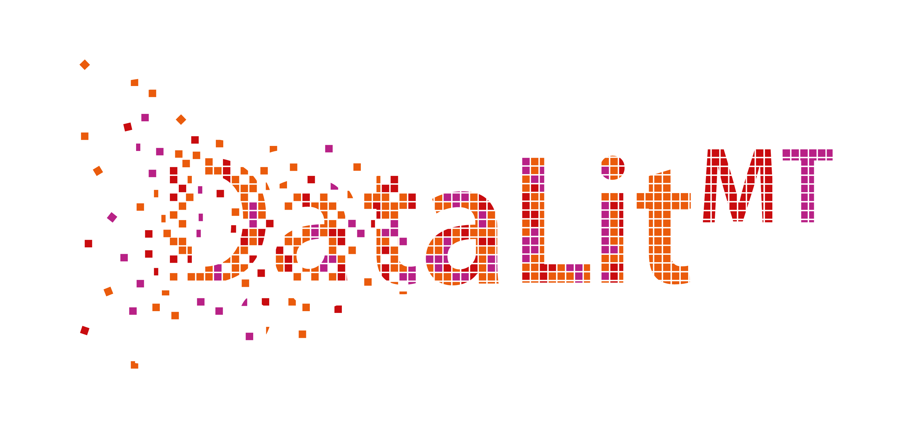

Welcome to the DataLitMT Project
The DataLitMT project at the Institute of Translation and Multilingual Communication at TH Köln, Germany, aims to develop didactic resources for teaching data literacy to BA students of translation studies/specialised communication programmes. The aim is for students working with these resources to develop an adequate MT literacy for their later professional career while at the same time becoming data-savvy citizens well equipped for the modern knowledge economy.
The project's results will be didactic resources to teach the various sub-competencies outlined in Ridsdale et al.’s Data Literacy Competencies Matrix in their translation-specific form of MT literacy. The teaching resources will be made publicly available in early 2023, most likely in the form of online Jupyter notebooks. These resources at the interface of MT literacy and data literacy can complement the teaching resources developed in the context of more extensive MT training initiatives.
This project is led by Professor Ralph Krüger. Also working on this project are Research Associate Janiça Hackenbuchner, Research Assistant Andre Busch and Professor Jürgen Esch.
Links
You can also access our GitHub account. On this account you will find learning resoures and code made available by the DataLitMT team.
Check out our University website for more information on this project.
Topics
This project covers the following.
Open Educational Resources under CC license